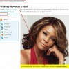

Whitney Houston a murit. E grav, înseamnă că în următoarele zile vom asculta „I Will Always Love You” de vreo zece ori pe oră şi vom învăţa scena despărţirii din filmul „The Bodyguard” pe de rost.
Ce urmează? Ca şi în cazul decesului vedetelor autohtone despre care am scris aici, prima seară e dedicată reportajelor şoc, care încep cu „ora 3 şi 55 minute. Serviciul de Urgenţă din Beverly Hills primeşte un apel disperat. La capătul celălalt al firului o voce panicată cere ajutor” şi continuă cu imagini care prezintă un cearşaf urcat într-o ambulanţă. Fireşte, nu putem vedea dacă pe targa respectivă e un sac cu cartofi sau un cadavru, dar imaginile respective sunt relevante în viziunea editorilor TV.
Urmează comentariile de tip „vestea a lovit ca un trăsnet publicul din întreaga lume”, apoi vom viziona, asculta ori citi, într-o ordine aproximativă:
- Ipoteze cu privire la cauza morţii;
- Lista potenţialilor vinovaţi morali;
- Putea fi salvată Whitney Houston? Cine avea interes să moară? Nu cumva e de vină doctorul personal? Dar fostul soţ? Dezbateri despre povara de a fi vedetă;
- Declaraţii ale stilistei personale, ale manichiuristei, ale portarului de la hotel, ale paramedicului care a răspuns la telefonul dat la 911, ale gărzilor de corp, ale bucătarului. Toţi înlăcrimaţi, dar dornici să se vadă la televizor;
- Ce avere avea cântăreaţa şi cine o va moşteni? Fix ca la moartea lui Steve Jobs. După care vom citi despre procesul care vizează succesiunea;
- Zeci de minute în direct şi în reluare de la înmormântare. Cine a participat şi ce ţinute a purtat;
- Filmul ultimului concert. Nu contează cât de bine sau prost a cântat Whitney Houston cu acea ocazie, nici ce public a avut, nici câte bilete s-au vândut. Doar ultima reprezentaţie ne va bântui de acum încolo;
- Interviuri cu psihologi, organizatori de concerte şi artişti români. Toţi îşi vor da cu părerea asupra vieţii „regretatei dispărute”;
- Lansarea melodiei la care lucra Whitney Houston înainte de moarte.
Poza cântăreţei, de obicei cu obişnuitul chenar funebru, va apărea în cele mai bizare contexte. Precum puteţi vedea, făcătorii de must din coada calului de la Idieta.ro (transformată în Plusdieta.ro, apoi în Dietista.ro din motive apropiate relaţiei cu Google) n-au ratat ocazia de a vă invita să slăbiţi sigur, garantat, exact ca Whitney Houston în cadă. Iată dovada.
Moartea unei personalităţi, indiferent de domeniul său de activitate, intensifică producţia de clişee a mass-media, acţionând ca un catalizator al penibilului şi al lipsei de inteligenţă creativă.


{kind=link}
na si tu acum! Ceva trebuie sa se vorbeasca in astfel de cazuri! Nu? Si WH nu a fost chiar fitecine desi statea in umbra drogurilor de ceva ani!
Pai cam ce ai scris tu mai sus, cam asta vrea sa vada lumea, daca noi n-am vrea sa vedem asta crezi ca aia sunt nebuni sa ne arate?
Evidement! (link)
Ratatouille(1), “ceva” da, aşa ceva (ce am scris eu) nu e obligatoriu. Subiectul poate fi acoperit în maxim 3 minute. O dată. Pentru aprofundări, ar putea fi lansat site-ul www. jelanie .net
Probiu(2), din păcate aşa e.
Ioana(3), da, interesul pentru Whitney Houston atinge cote paroxistice. Iată doar trei exemple de căutări (autentice!):
Toate de azi, în grafia originală.
Nu…nu numai pentru Whitney Houston interesul atinge limitele maxime, ci pentru orice vedeta care moare.
Interesul presei fata de persoana moarta creste exponential cu gradul mistico-fantastic al conjuncturii mortii.
Dacă moartea ar fi reversibilă, multe dintre vedetele româneşti s-ar omorî de zece ori pe an
În ce măsură contează contextul morţii? Whitney Houston s-a înecat dormind în cadă. Există ceva mai banal de atat? Şi totuşi interesul e enorm. Însă probabil ar fi fost şi mai mare dacă o strangula Bobby Brown cu firul de la veioză.
O fi banal, nu zic nu, dar lasa loc de mister.
Stii si tu: “Dar despre tentative de omor ce spuneti? Ati eliminat complet aceasta posibilitate? Dar la autopsie ce a iesit: s-a innecat, sau a murit inainte sa ajunga cu capul in apa?”
Haide, ca sunt multe intrebari stupide pe baza carora se pot face emisiuni. De ce sa le ratam?
Urmând acest fir logic, ne macină întrebările: “de ce n-avea colac de salvare? sau avea, dar cineva i l-a înţepat? cine a umblat cu ace ori cuie în camera de hotel?”
Serios vorbind, cum îi scriam lui Ratatouille aici, ştirea e: “Whitney Houston a murit înecată în cadă, după ce a luat (din proprie iniţiativă) o doză de calmante nerecomandate în combinaţie cu alcoolul. Cântăreaţa avea 48 de ani. Dumnezeu s-o ierte!” Punct.
Restul e…mizerie.
Comments on this entry are closed.